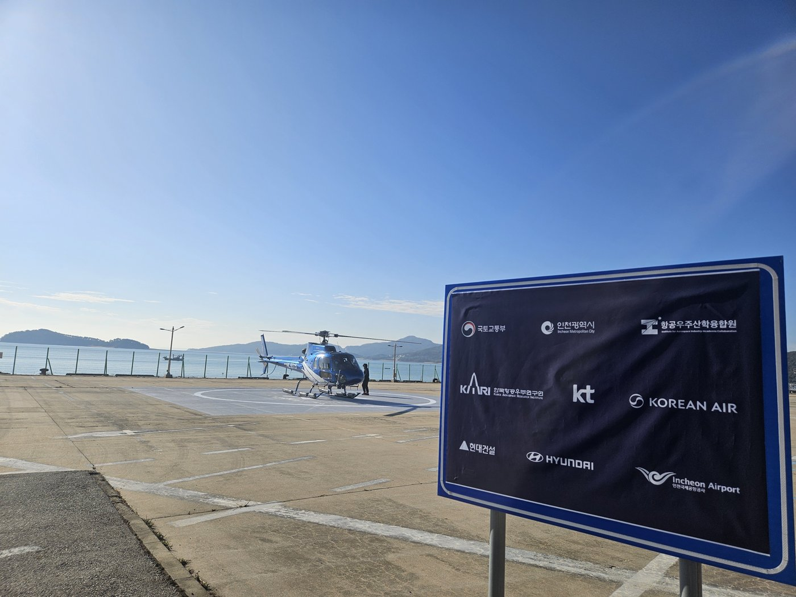

인천시, 덕적도~영종도 UAM 시범운용구역 지정 추진…국토부에 예비신청
2027년 1분기 본신청, 2028~2030년 단계별 상용화
덕적도 뱃길 연 4만3000명, 응급헬기 이송 연 25건
거잠포·왕산마리나 이어 송도 여객터미널·미추홀타워 연계 검토
AI경제저널=김갑봉 기자 | 인천시(시장 박찬대)는 섬 지역 도심항공교통(UAM) 도입을 위해 2027년 시범운용구역 지정을 추진한다고 3일 밝혔다. 시는 지난 10월 22일 국토교통부에 시범운용구역 예비신청을 마쳤다.
시범운용구역 지정은 「도심항공교통 활용 촉진 및 지원에 관한 법률」 제8조가 근거다. 시는 운영계획을 세우고 관계기관과 협의한 뒤 2027년 1분기 본신청을 낼 계획이다.
2026 개념실증, 2027 지정, 2028~2030 상용화
해양항공국 기자간담회 자료를 보면 시는 올해 개념실증, 2027년 시범운용구역 지정, 2028년부터 2030년까지 단계별 상용화 순으로 사업을 추진한다.
시는 섬 주민이 육지의 의료·생활서비스를 빨리 이용하게 하고, 인천국제공항 환승객의 관광 범위를 섬까지 넓히려는 사업이라고 설명했다.
첫 노선은 덕적도와 영종도를 잇는다. 시에 따르면 덕적도 해운노선 이용객은 연평균 4만3000여 명이고, 응급헬기 이송은 연평균 25건 안팎이다.
운항 노선은 덕적도와 영종도 거잠포·왕산마리나를 잇는 방안을 중심으로, 송도 인천항국제여객터미널과 미추홀타워를 연계하는 방안도 검토한다. 거잠포는 인천공항 자기부상열차와 제1터미널, 공항철도, 시내·시외버스와 이어질 수 있다고 시는 설명했다.
헬기로 대신 날아 본 실증
시는 지난 10월 19~20일 덕적도~영종도 노선에서 UAM 대신 헬기를 띄워 실증비행을 했다. 노선 설계에 필요한 통신 환경과 비행절차를 확인했다.

시가 지난달 21일 밝힌 내용을 보면 이 실증은 「2026년 인천 도서지역 UAM 실증 지원사업」으로 항공우주산학융합원과 「K-UAM 원팀」이 함께했다. 원팀에는 KT와 대한항공, 현대건설, 현대자동차, 인천국제공항공사가 참여한다.
시는 당시 인천시 UAM 플랫폼과 국가연구개발과제로 개발한 UAM 교통관리시스템을 연계해 운항관리와 버티포트 운영, 통신 기능을 점검했다고 밝혔다. 거잠포와 덕적도를 중심으로 버티포트(UAM 이착륙장) 조성과 기존 시설 활용 방안을 추진한다는 계획이다.
박광근 시 해양항공국장은 "도심항공교통(UAM)은 해상교통에 의존하는 섬지역의 긴급 이동수요에 대응하고 공항과 지역 관광을 연결할 수 있는 새로운 교통수단"이라며 "실증 결과를 바탕으로 관계기관과 긴밀히 협력해 시범운용구역 지정을 추진하겠다"고 말했다.
참고문헌
- "인천시, 섬지역 도심항공교통(UAM) 본격화... 2027년 시범운용구역 지정 추진", 인천시, 2026.11.3., https://www.incheon.go.kr/IC010205
- "해양항공국 기자 간담회 자료", 인천시 해양항공국, 2026.11.3.
- "인천시, 영종~덕적 도심항공교통(UAM) 실증 성공…도서지역'공공 모빌리티'물꼬 텄다", 인천시, 2026.10.21., https://www.incheon.go.kr/IC010205/view?repSeq=DOM_0000000015795887
[사진 출처]
- [사진1] 인천시, 「인천시, 섬지역 UAM 본격화」 보도자료 사진자료 「UAM (1)」, 2026.11.3., 공공누리 제1유형(출처표시)
관련기사
- [글로벌 인천공항⑯] SAF 감면 200편 1740만원, 구매비 지원은 예산안 밖
- [글로벌 인천공항⑮] 해외 항공기 4001대 들인 샤먼, 인천공항 정비도 남의 물량으로
- [글로벌 인천공항⑭] 한중 노선 국적사 몫 54%→46%, 베이징·상하이 늘려야
- [글로벌 인천공항⑬] 인천공항 44% 외국인, 연말 끝나는 비자 특례 상설로
저작권자 © AI경제저널 무단전재 및 재배포, AI학습 및 활용 금지